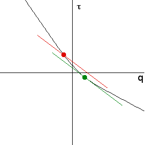

| Recall that for each point on the τ(q) graph, the slope
of the tangent line is -α and the tangent line intersects the τ-axis at a point
we call (0, f(α)). This is the green point and line in the graph. |
|  |
| Through other points (q, τ(q)) on the graph draw the line with slope this same value
of -α. The red point and line is an example. |
| This line intersects the τ-axis at the point (0, t), where
t = τ(q) + α⋅q: |
| -α = (t - τ(q))/(0 - q), so t = τ(q) + α⋅q |
| From the graph it is apparent that the minimum value of t occurs when -α is
the slope of the line tangent to the τ(q) graph at the point (q, τ(q)). |
| Thus for fixed α, we approximate the value of f(α) by the minimum of
τ(q) + α⋅q, where the minimum is taken over all the sampled q values. |